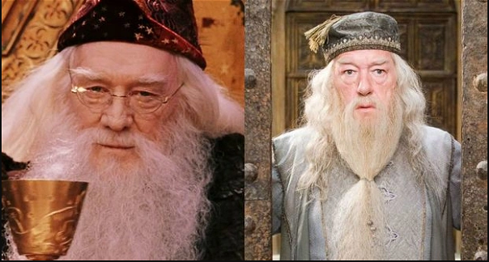
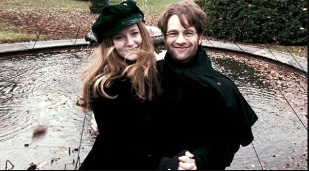

Harry Potter é uma série de sete romances de fantasia escrita pela autora britânica J. K. Rowling. A série narra as aventuras de um jovem chamado Harry James Potter, que descobre aos 11 anos de idade que é um bruxo ao ser convidado para estudar na Escola de Magia e Bruxaria de Hogwarts. O arco de história principal diz respeito às amizades de Harry com outros bruxos de sua idade, como Ron Weasley e Hermione Granger, e também com o diretor de Hogwarts Albus Dumbledore, considerado o maior dos magos, e seus conflitos com o bruxo das trevas Lord Voldemort, que pretende se tornar imortal, conquistar o mundo dos bruxos, subjugar as pessoas não-mágicas e destruir todos aqueles que estão em seu caminho, especialmente Harry Potter, a quem ele considera seu maior rival
Desde o lançamento do primeiro romance, Harry Potter e a Pedra Filosofal, em 26 de junho de 1997, os livros ganharam uma imensa popularidade, aclamação da crítica e foram um sucesso comercial em todo o mundo. A série também recebeu algumas críticas, incluindo a preocupação com o tom cada vez mais sombrio conforme a história progredia. Até maio de 2015, já haviam sido vendidas 450 milhões de cópias em todo o mundo, tornando a série a best-seller da história, sendo traduzida para 73 idiomas. Os últimos quatro livros consecutivamente foram considerados os mais vendidos da história, sendo que o último livro vendeu cerca de 11 milhões de cópias nos Estados Unidos nas primeiras 24 horas após o seu lançamento.
A série abrange vários gêneros, como fantasia, vida escolar e passagem entre a infância e a juventude (com elementos de mistério, suspense, aventura e romance), sendo que a história tem muitos significados e referências culturais. De acordo com Rowling, o tema principal é a morte. Há também muitas outras temáticas na série, como preconceito e corrupção.
Os livros foram originalmente impressos em inglês por duas grandes editoras, a Bloomsbury do Reino Unido e a Scholastic Press nos Estados Unidos. A série já foi publicada por muitas editoras em todo o mundo. A adaptação para uma série composta por oito filmes feita pela Warner Bros. Pictures se tornou a série cinematográfica mais assistida da história. Tamanho sucesso fez com que a marca Harry Potter chegasse ao valor de 15 bilhões de dólares. Além disso, o parque temático The Wizarding World of Harry Potter foi introduzido em diversas unidades da Universal Parks & Resorts.
Personagens
Harry Potter
Filho de Tiago (James) e Lily Potter, Harry Tiago Potter perdeu seus pais quando tinha apenas 1 ano. Após assassinar friamente os Potter, o temido bruxo das trevas Voldemort tentou matar o pequeno Harry, mas, por algum motivo, o feitiço recocheteou e praticamente destruiu Voldemort, que desapareceu. Harry não se machucou, ficando apenas com uma pequena cicatriz em forma de raio em sua testa.
Por essa razão, o nome Harry Potter ficou marcado na história bruxa, ainda que o jovem Harry tenha crescido sem saber de nada disso. Criado por seus tios trouxas (não-mágicos), Harry sempre foi posto de lado e feito de empregado para seu primo mimado Duda. Mas tudo muda quando, aos 11 anos, ele recebe sua carta da Escola de Magia e Bruxaria de Hogwarts e descobre que é um bruxo.
Nos anos a seguir, Harry acaba encarando diferentes e mortais desafios enquanto tenta levar uma vida o mais próxima do normal na escola, onde tem aulas de feitiços, poções, voo de vassoura, herbologia e outras disciplinas. Mas o retorno de Voldemort e as tentativas de seus antigos aliados de matar o menino exigirão muito dele e de seus dois melhores amigos, Rony e Hermione.
Ronald Weasley
Ronald Bilius Weasley, ou Rony, é o dos filhos mais novos de Arthur e Molly Weasley. 6º dos 7 filhos da família, cresceu sentindo-se à sombra das conquistas de seus irmãos mais velhos. Com uma condição financeira humilde, sempre usou as roupas e uniforme de Hogwarts já usados por seus irmãos, bem como livros e até mesmo sua varinha, o que já foi motivo de bullying de alunos como Draco Malfoy.
Conhece Harry na Estação de Kingcross, e acaba se aproximando do garoto durante a viagem para Hogwarts. No decorrer da saga, eles e Hermione se tornam amigos inseparáveis, e Harry passa a ser tratado como parte da família pelos Weasleys.
Aos poucos, Rony se apaixona por Hermione, mas precisa vencer suas inseguranças. Embora seja medroso quanto a variadas coisas, está sempre ao lado de Harry, seja para roubar o carro voador de seus pais e garantir que eles cheguem à escola, para enfrentar aranhas gigantes das quais tem pavor ou para confrontar Voldemort e seus aliados.
Hermione Granger
Hermione Jean Granger nasceu de pais trouxas, o que fez com que sofresse um pesado preconceito de alguns dos alunos que valorizavam a "pureza de sangue dos bruxos" e se referiam a ela como "sangue sujo". Provavelmente a aluna mais brilhante que já passou por Hogwarts, Hermione é apaixonada por livros e estuda tudo que puder, o que faz dela peça fundamental na luta contra Voldemort. E sejamos sinceros, Harry e Rony estariam em grandes problemas sem a ajuda da garota.
Embora sua arrogância juvenil tenha dificultado ela fazer amigos em seu primeiro ano de Hogwarts, logo conseguiu se aproximar de Harry e Rony. Nos anos seguintes, acaba se afeiçoando por Rony, mas se magoando com a inabilidade social do amigo.
Ajuda Harry a se preparar para o Torneio Tribruxo, ensinando e praticando diferentes feitiços com ele; é a única a pensar em detalhes de sobrevivência diária para a busca das Horcruxes; ficou ao lado de Harry a cada passo de todos os mortais desafios da saga; e chegou a apagar as memórias de seus pais sobre sua própria existência, para evitar o sofrimento caso ela não retornasse da guerra contra Voldemort
Draco Malfoy
Draco Lucius Malfoy é filho de Lucius e Narcisa Malfoy, uma família extremamente rica e conhecida por ter apoiado Voldemort em sua primeira ascensão. Após a queda do bruxo das trevas, contudo, eles alegaram terem sido obrigados a obedecer por meio da maldição Imperius.
Mimado, invejoso e preconceituoso, Draco vê Harry como um rival já no primeiro ano dos dois em Hogwarts. Sempre tentando se provar melhor que os demais, pratica bullying com vários colegas da escola, incluindo seus seguidores mais próximos, como Boyle e Crabbe.
Chega a chamar Hermione de sangue-ruim, por seus pais serem trouxas, e demonstra estar ao lado de seus pais nesse pensamento segregacionista de que apenas bruxos de "sangue puro" merecem seguir na magia.
Neville Longbottom
Neville é um jovem atrapalhado e medroso, mas que não exita em se mexer para fazer a coisa certa. Filho de Frank e Alice Longbottom, Neville foi criado por sua avó, após seus pais serem torturados pela Comensal da Morte Belatrix Lestrange até ficaram loucos.
No decorrer da franquia, Neville cresce muito e aprende com Harry, na Armada de Dumbledore, a usar melhor suas habilidades como bruxo. Mais corajoso do que pode parecer a princípio, esteve ao lado de Harry em alguns dos maiores desafios e nunca abandonou a luta contra Voldemort.
Luna Lovegood
Luna é uma aluna da Corvinal que costuma sofrer bullying na escola e ser alvo de diferentes brincadeiras por causa de seu jeito peculiar. Luna tem um jeito avoado, como se estivesse sempre pensando em outras coisas. Calma e despreocupada com o que pensam dela, sempre veste roupas extravagantes e faz comentários inesperados.
Filha de Xenophilius e Pandora Lovegood, Luna perdeu sua mãe ainda bem criança, quando um experimento com feitiços deu errado. Durante o 5º ano de escola, acaba se aproximando de Harry ainda na viagem para Hogwarts, quando admite também ver os Testrálios, espécies de cavalos cadavéricos visíveis apenas para aqueles que já viram a morte de perto.
Torna-se um dos integrantes da Armada de Dumbledore e se mantém leal durante toda a guerra contra Voldemort, mantendo-se até o final do conflito e sendo de fundamental importância.
Fred e George Weasley
Os gêmeos Weasleys são irmãos mais velhos de Rony. Extremamente inteligentes, usam todo seu conhecimento e tempo inventando as mais diferentes brincadeiras e pegadinhas pelas quais ganharam fama por toda Hogwarts.
Durante o 5º ano de Harry na escola, Fred e George decidiram abandonar Hogwarts antes de terminarem seu último ano de educação, revoltados com a direção autoritária de Dolores Umbridge, mas não antes de soltar fogos dentro do castelo e pregar uma peça épica na detestável diretora interina.
Nos livros seguintes, vemos que os irmãos abriram uma loja de brincadeiras no Beco Diagonal, a Gemialidades Weasley, onde começaram um negócio de sucesso vendendo suas invenções. Contudo, os dois se uniram à batalha contra Voldemort no último livro.
Albus Dumbledore

Albus Percival Wulfric Brian Dumbledore é o diretor da Escola de Magia e Bruxaria de Hogwarts. Além de ser um dos melhores diretores que a escola já teve, é o único bruxo que Voldemort temia. Já negou o cargo de Ministro da Magia algumas vezes, motivo pelo qual o atual ministro se sente ameaçado por ele.
É mundialmente conhecido por ter sido o responsável por derrotar o terrível bruxo das trevas Gellert Grindelwald, e por estar à frente da resistência contra Voldemort na Primeira Guerra Bruxa. Sem nunca ter acreditado que Voldermort desaparecera para sempre após ser quase mortalmente ferido na tentativa de matar Harry ainda bebê, Dumbledore protegeu Harry desde sua infância, o levando para morar com seus tios.
Acaba sendo um mentor para Harry e alguém em quem o bruxo deposita sua maior confiança, embora ela seja testada algumas vezes, principalmente pelos segredos que guardava em seu passado.
Minerva McGonagall
Professora de Transfiguração, animaga registrada (pode se transformar em um animal, em seu caso, em um gato), diretora da Casa da Grifinória e vice-diretora de Hogwarts, Minerva McGonagall é uma professora exigente, mas justa. Braço direito de Dumbledore, esteve a seu lado e ao lado da escola na Batalha de Hogwarts, contra Voldemort e seu exército. Na ocasião, inclusive, defendeu Harry mais de uma vez.
Em seus tempos de escola, foi uma brilhante estudante e monitora da Grifinória. Estimula a sede de conhecimento de Hermione e tenta lhe ajudar a fazer mais disciplinas do que o normal durante o terceiro ano de escola da jovem, conseguindo-lhe um Vira-Tempo, para que ela pudesse voltar no tempo para assistir a todas as aulas.
Embora não tenha integrado oficialmente a Ordem da Fênix durante a Primeira Guerra Bruxa, ajudou o Ministério da Magia a espionar os Comensais da Morte, trazendo informações úteis para os aurores (bruxos profissionais que caçam feiticeiros das trevas).
Rubeus Hagrid
Conhecemos Hagrid como o atrapalhado Guardador de Chaves e Protetor das Terras de Hogwarts. Meio humano e meio gigante, é ele que leva o bebê Harry para a casa de seus tios, logo após a morte dos Potter, encontrando Dumbledore e Minerva ao chegar lá. É ele também que entrega a Harry sua carta de Hogwarts, revela que ele é um bruxo e o leva para fazer as compras para a escola no Beco Diagonal.
Expulso de Hogwarts durante seu terceiro ano escolar, quando tinha apenas 13 anos, ele não tem permissão para praticar magia, embora esconda as partes quebradas de sua antiga varinha em um velho guarda-chuva rosa.
Durante o terceiro ano de escola de Harry, Hagrid é nomeado professor de Trato de Criaturas Mágicas, tema pelo qual sempre foi fascinado, tendo sempre sonhado em criar as mais diferentes criaturas. Um grande amigo de Harry, Rony e Hermione desde o primeiro ano em Hogwarts, recebe visitas frequentes dos meninos em sua cabana, para tomar chá e resolver algumas confusões.
Severo Snape
Snape é um dos professores de Hogwarts. Amargo, sempre sério, pegando no pé de todos os estudantes e sempre tentando proteger os alunos de sua própria casa, ele não é exatamente querido por todos. Mas com Harry a antipatia foi ainda maior. Desde a primeira aula com Potter, Snape deixou bem claro que sentia uma misteriosa raiva por ele.
No decorrer dos livros e filmes, descobrimos que a antipatia de Snape vem, na verdade, de Tiago Potter, pai de Harry. Tiago e Snape frequentaram Hogwarts como estudantes em uma mesma época. Nos primeiros anos de escola, Tiago e seus amigos - Sirius Black, Remo Lupin e Peter Pettigrew - fizeram bullying com Snape. Sua única amiga era a jovem Lily, que já conhecia desde antes de Hogwarts e por quem sempre alimentou uma grande paixão.
Contudo, Tiago se aproxima de Lily, muda sua conduta e os dois se apaixonam e eventualmente se casam, para completa ira de Snape. Além disso, o bruxo nunca superou a morte de Lily para salvar o pequeno Harry.
Remus Lupin
Novo professor de Defesa contra as Artes das Trevas, Lupin dá excelentes aulas. Com a fuga do temido criminoso Sirius Black de Askaban, Hogwarts está cercada por dementadores, as terríveis criaturas que sugam felicidade e que trabalham em Askaban.
Por perceber o efeito que os dementadores têm em Harry, cujo passado trágico o afeta mais na presença das criaturas, Lupin o ajuda a aprender o avançado feitiço do Patrono. Mas suas alegadas doenças uma vez por mês começam a levantar suspeitas. E Snape demonstra completo ódio pelo novo professor.
Tiago (James) Potter

Tiago (James, na versão original em inglês) é pai de Harry. Ao lado de Lily, fez parte da Ordem da Fênix durante a Primeira Guerra Bruxa, organização secreta que recolhia informações e lutava contra Voldemort. Ele e Lily foram assassinados pelo Lorde das Trevas em sua própria casa, quando o bruxo chegou ao vilarejo em que eles moravam na tentativa de matar Harry, ainda bebê.
Durante seu tempo de escola, era extremamente popular, parte do time de Quadribol da Grifinória, andava sempre com Sirius Black, Remus Lupin e Peter Pettigrew, e praticava bullying como brincadeiras com alguns estudantes, principalmente com Severus Snape. Tal atitude causou o ódio de Snape pelo grupo, especialmente por Tiago. E Lily também não o via com bons olhos.
Contudo, não era uma pessoa má, chegou a salvar a vida de Snape, não media esforços para ajudar seus amigos, e mudou de atitude durante seus últimos anos em Hogwarts. Em seu sétimo ano, inclusive, foi eleito monitor-chefe da Grifinória e começou a namorar Lily, com quem viria a se casar. Todos que conhecem Harry dizem que ele é extremamente parecido com seu pai mais jovem, mas que tem os olhos de sua mãe.
Lilian (Lily) Potter
Lilian Potter é esposa de Tiago Potter e mãe de Harry Potter. Nascida em uma família trouxa, foi a única que despertou a magia, para a eterna inveja e desprezo de sua irmã Petúnia. Por esse motivo, inclusive, Petúnia tentou impedir que Harry manifestasse magia e seguisse o caminho de seus pais, e mentiu por completo sobre sua origem, nos anos em que criou o jovem órfão.
Sempre reconhecida por ser uma pessoa gentil e de bom coração, é lembrada por sua bondade mesmo anos após sua morte. Acredita-se que foi o seu sacrifício, como mãe, ao dar sua vida na tentativa de salvar Harry, que criou uma espécie de escudo que impediu que Voldemort o matasse, principalmente por o bruxo das trevas não entender sobre o poder do amor.
Era amiga de infância de Snape, mas eles foram se afastando aos poucos após ela começar um relacionamento com Tiago Potter, inimigo declarado de Snape. Ainda assim, seguiu sendo a única paixão da vida do professor de Poções.
Sirius Black
Embora Sirius tenha sido rapidamente mencionado em Harry Potter e a Pedra Filosofal (Livro 1), é apenas em Harry Potter e o Prisioneiro de Askaban (Livro 3) que conhecemos de fato o antigo amigo de Tiago Potter, Remus Lupin e Peter Pettigrew.
Neste livro, descobrimos que Sirius fugiu da prisão de bruxos Askaban, onde passou os últimos 12 anos de sua vida, preso por ter revelado a localização dos Potter a Voldemort e ter matado mais de 10 trouxas e Peter Pettigrew em uma tentativa de fuga.
Embora esteja foragido no início da trama, sabe-se que na prisão ele sempre repetia o nome de Harry Potter, o que leva a todos a pensarem que ele deseja se vingar de Harry por ter derrubado Voldemort.
Durante sua época como aluno em Hogwarts, Sirius era melhor amigo de Tiago Potter, Remus Lupin e Peter Pettigrew, e foi visto como um completo traidor após a acusação de ter tido alguma relação com a morte dos pais de Harry.
Peter Pettigrew
Em Harry Potter e o Prisioneiro de Askaban (Livro 3), descobrimos que Tiago Potter tinha três grandes amigos em seus tempos de Hogwarts: Sirius Black, Remus Lupin e Peter Pettigrew. Peter era o menos popular do grupo, sempre muito medroso e desajeitado, mas o grupo cuidava um do outro.
Após Voldemort assassinar os Potters, Sirius foi acusado e preso por ter revelado a localização dos amigos ao Lorde das trevas, por ter matado mais de dez trouxas em uma tentativa de fuga e por ter assassinado Peter Pettigrew, de quem apenas um dedo foi encontrado na tenebrosa cena do crime, onde Sirius estava rindo.
Dolores Umbridge
Dolores Umbridge é uma oficial do Ministério da Magia que foi integrada ao corpo docente de Hogwarts por exigência do Ministro da Magia. Após Dumbledore declarar o retorno de Voldemort, em Harry Potter e o Cálice de Fogo (Livro 4), o atual ministro Cornelius Fudge se rejeitou a acreditar no diretor de Hogwarts e negou a volta do bruxo das trevas, acusando ainda Dumbledore de uma tentativa de causar pânico na comunidade bruxa para roubar o seu cargo no Ministério.
Para conter isso, Umbridge foi enviada para ocupar o cargo de professora de Defesa Contra as Artes das Trevas, e em seu exercício evitava que os alunos usassem ou aprendessem quaisquer feitiços, com o objetivo de evitar a possível criação de um exército de Dumbledore. Chegou a interrogar alunos com o uso de poções da verdade, e a punir Harry e outros estudantes com castigos físicos.
Por esse motivo, Hermione teve a ideia de criar um grupo de estudos secreto no qual Harry poderia ensinar outros alunos feitiços e encantamentos diversos. Ironicamente chamado de Armada de Dumbledore, a equipe treinou importantes feitiços, como desamarmento, Patrono, entre outros. Tudo isso enquanto um grupo de vigilancia criado por Umbridge e formado por alunos da Sonserina tentava descobrir as aulas secretas.
Voldemort (Tom Marvolo Riddle)
Por todas as atrocidades que cometeu durante a Primeira Guerra Bruxa, Voldemort era constantemente chamado apenas como "Você-Sabe-Quem", dado o pavor que as pessoas tinham em apenas pronunciar seu nome. Em seu auge no começo da década de 1980, Voldemort tentou matar o pequeno Harry Potter, na época com apenas 1 ano. Contudo, depois de matar Tiago e Lily Potter, o bruxo das Trevas não só não foi capaz de matar Harry, como acabou sendo quase destruído e desaparecendo.
Embora a derrota de Voldemort tenha sido extremamente comemorada na comunidade bruxa, alguns não acreditaram que ele havia morrido de fato. Nos anos em que Harry passou em Hogwarts, acompanhamos as tentativas de retorno do Lorde das Trevas, até sua nova ascensão.